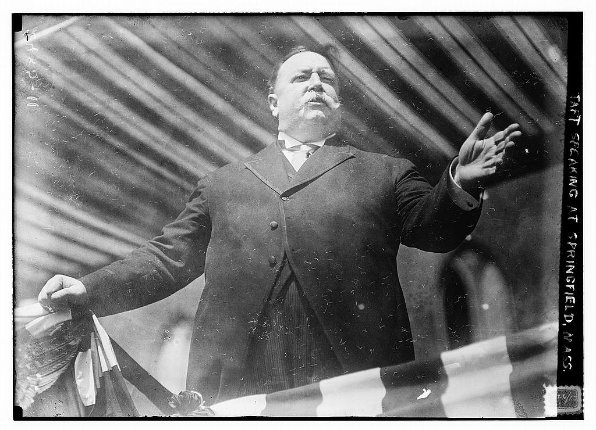

Currently a PhD student in Rhetoric & Composition at UMass Amherst; previously attained a dual MA/MAT in English from Salem State University; Founder & Editor of Mock Orange Magazine 
Curriculum Vitae Englwrit 112: College Writing, Fall 2017 Kate Artz on GitHub TVETHIOPIA Network Mock Orange Magazine